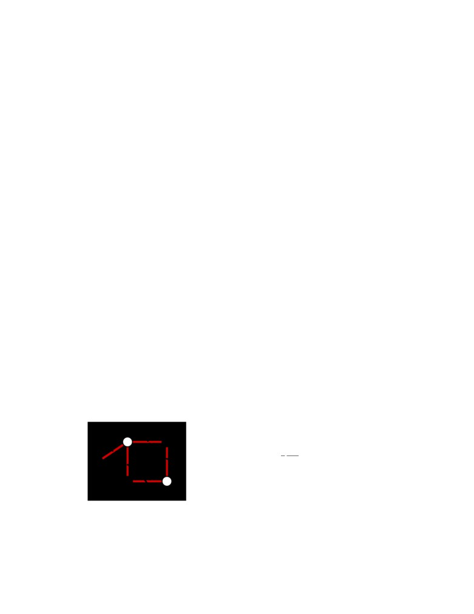
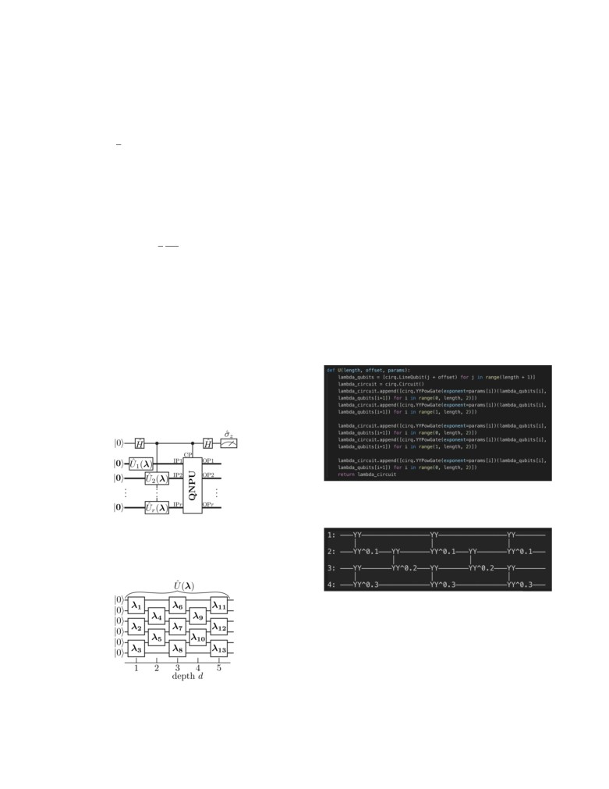
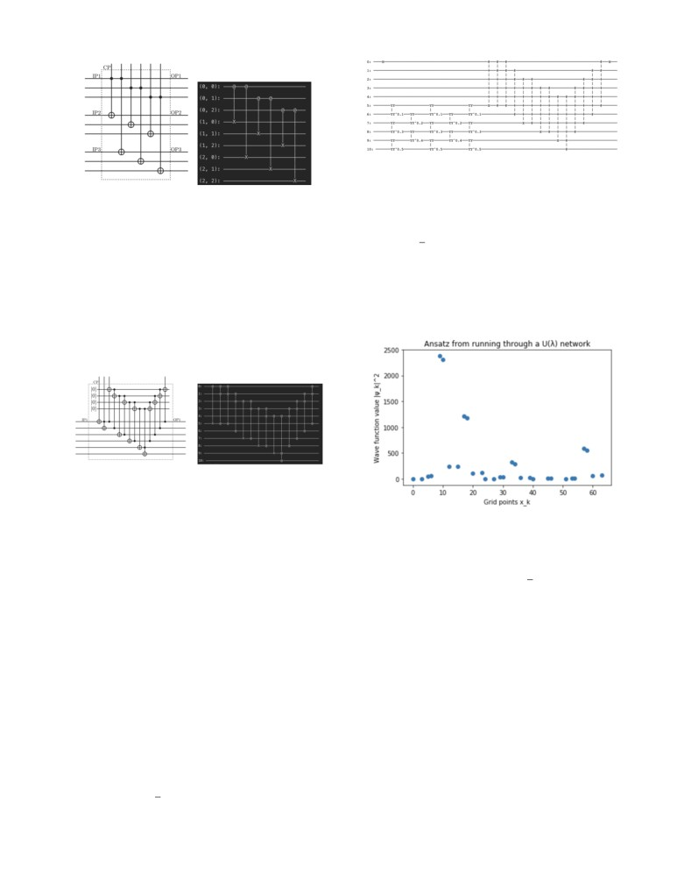
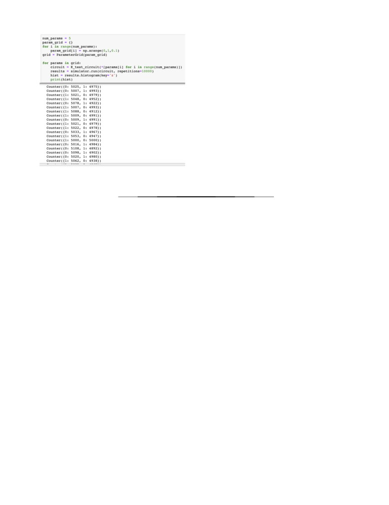

Solving Partial Differential Equations with Variational Quantum Algorithms
Kevin Ngo
McMahon Lab, Department of Applied and Engineering Physics, Cornell University
(Dated: November 20, 2020)
Nonlinear partial differential equations have wide applications from fluid dynamics to biology
systems. However, these equations can often be very complex without elegant analytical solutions.
Quantum computation provides an opportunity to improve upon the efficiency of previously existing
numerical methods. In this paper, we examine variational quantum algorithms in particular, in order
to verify its ability to solve the nonlinear Schrodinger’s equation. We deconstruct the algorithm
presented by Lubasch et al. [1] and attempt to simulate a simplified version on a classical computer.
I. OVERVIEW OF VARIATIONAL QUANTUM
ment corresponds to a different configuration. The en-
ALGORITHMS
ergy states for these configurations are the sum of all edge
weights where edges from S to the complement of S are
Variational quantum algorithms aim to solve problems
negative and all other weights are positive. These can
according to the variational method in quantum mechan-
be represented in a Hamiltonian operator which may be
ics. Broadly, the variational method seeks to find the
a diagonal matrix with the corresponding energy values
lowest energy eigenstate of a system by initializing an
on the diagonal. The eigenvalues then correspond to the
ansatz parametrized on some values and then minimizing
energy values and finding the eigenvector associated with
the expectation energy value based on those parameters.
the lowest eigenvalue is equivalent to finding the solution
For variational quantum algorithms, this is typically done
to the Max-Cut problem [3].
with a hybrid approach, evaluating the expectation en-
This can be solved using a variational quantum eigen-
ergy value with a parametrized quantum circuit and then
solver, as the algorithm seeks to find the eigenvector
performing the optimization clasically.
associated with the lowest eigenvalue for a system. n
qubits are required to encapsulate the 2n configurations.
An ansatz, ψ(λ), is generated by a quantum circuit,
A. Variational Quantum Eigensolver
parametrized on some values λ. The expectation value
⟨ψ(λ)SHSψ(λ)⟩ is measured by sampling a quantum cir-
cuit. This value is minimized on a classical computer
A motivating example to apply a variational quan-
and the parameters λ are modified accordingly. This is
tum algorithm is the Max-Cut problem. The Max-Cut
repeated until it converges on a solution.
problem can be described as follows: Given a graph
G = (V,E), select a subset S ⊆ V such that the number of
edges between S and the complement of S is maximized
II. SOLVING THE NONLINEAR
[2]. The weighted version of the problem is modified such
SCHRODINGER’S EQUATION
that each edge has a weight and the total weight of the
edges between S and the complement of S is maximized.
For this problem, the dimension of the problem space
This project aimed to replicate the algorithm proposed
grows exponentially (the number of configurations grow-
by Lubasch et al. [1]. In their paper, they solve the one-
ing with respect to the number of vertices), which makes
dimensional Gross-Pitaevskii equation shown in Eq. (1)
it well suited to be used with a quantum algorithm.
by minimizing the cost function in Eq. (2), where tKy,
tP y, tIy are the kinetic, potential, and interaction en-
ergies respectively.
d2
−1
+V (x)+gSf(x)S2
f (x) = Ef (x)
(1)
2
dx2
C = tKy+tPy+tIy
(2)
This equation is solved by applying the finite difference
FIG. 1: Max-cut problem example, represented with
method to discretize the wave function on an interval
graph colorings such that the white nodes are in S and
[a, b] into N equidistant grid points where hN is the grid
the black nodes are in the complement of S
spacing. These grid points are represented with n qubits
where 2n = N . The value of the wave function ψk =
For a graph with n vertices, the 2n configurations can
ψ(xk ), where xk is one of the k ∈ {0, ..., N −1} grid points,
be represented in a vector of length 2n where each ele-
is represented as the probability value of each of the N

2
configurations of qubits. This maintains the necessary
III. SIMULATION
normalization condition ∑N−1k=0 Sψk S2 = 1. The boundary
condition ψ0 = ψN−1 is also enforced. Thus, the energies
To simulate the algorithm presented in the Lubasch et
for the discretized wave function are described in Eq. (3)
al. paper, the Cirq library was used. The library allows
below:
us to build and execute quantum circuits on a quantum
computer. One detail that may need clarification is that
occasionally, the qubits are indexed by a single integer,
N −1
and at other times they are indexed by an ordered pair.
tKy = −11
Q ψ∗k(ψk+1 − 2ψk + ψk−1),
(3a)
2h2
This refers to the LineQubit and GridQubit objects in the
N k=0
Cirq library, which limit multi-qubit gate connections on
physical quantum computers, but do not pose such con-
N −1
straints when simulating on a classical computer. They
tP y = Q [ψ∗kV (xk )ψk ],
(3b)
are used interchangeably in the following examples.
k=0
A. Replicating circuit components
N −1
1
g
tIy =
Q Sψk S4,
(3c)
2hNk=0
1.
Û (λ) network
The
Û (λ) networks were generated such that there can
A. Circuit
be a variable length of n qubits with an offset in order
to be connected with other components of the circuit.
The circuit presented in the Lubasch et al. paper gen-
At the moment, the depth is always d = 5 with only n
erates the ansatz for the wave function through the
Ûj(λ)
parameters (these are replicated as much as necessary),
networks depicted in Fig. 3 such that Sψ(λ)j ⟩ =
Ûj(λ)S0⟩.
but may be modified in the future in order to improve
This ansatz is based on matrix product states. The wave
the ansatz.
function then passes through the quantum nonlinear pro-
cessing unit (QNPU) where the cost function is evalu-
ated. The variational method is applied here by min-
imizing this cost value on a classical computer to find
optimal parameters λ.
FIG. 4: Code snippet for generating
Û (λ) network
FIG. 2: Overview of circuit presented in the Lubasch et
al. paper
FIG. 5:
Û (λ) network generated for n = 4, offset = 1,
and parameters = [0.1, 0.2, 0.3]
2. Interaction energy term
Each of the energy terms are found within the QNPU
FIG. 3: Network generating ansatz for wave function
unit depicted in Fig. 2. The nonlinear term SψS4 is calcu-
lated through a sequence of CNOT gates shown below.

3
FIG. 8: Circuit for reduced Schrodinger’s eguation
(a) Reference
(b) Cirq simulation
The goal of reducing the equation was to begin running
FIG. 6: Circuit for interaction energy term for n = 3
the algorithm and to compare the results against a known
solution. F√this simplified problem, the solution should
be ψ(x) =
2 sin(πx) [4]. This would be the result of
3. Kinetic energy term
the
Û (λ) network when parametrized with the values of
the converged solution. To gain a better understanding
The kinetic energy term is currently coded statically
of the ansatz initially generated by the
Û (λ) network,
for n = 6, unlike the previous two components which are
the wave function was plotted with random parameters
parametrized for a variable n. This is because it is cur-
in Fig. 9.
rently unclear to us how the circuit corresponds to the
kinetic energy term in Eq. 3a, but will be extended in
the future once a better understanding is gained.
(a) Reference
(b) Cirq simulation
FIG. 7: Circuit for kinetic energy term for n = 6
FIG. 9: Ansatz initialized from a
Û (λ) network with
n = 6, d = 5, and parameters [0.1,0.2,0.3,0.4,0.5]
4. Potential energy term
After optimizing the paramete√, the graph in Fig. 9
The potential energy term consists of another network
should ideally resemble ψ(x) =
2 sin(πx). However,
of CNOT gates as well as a component for the external
upon attempting this through a simple grid search, it was
potential V . This has not been implemented, but it is
found that any modification to the parameters resulted in
the final component of the QNPU.
trivial changes to the measured cost as shown in Fig. 10.
There are a handful of reasons why this might be the
case. One reason could be that the ancilla qubit on the
B. Simplifying and solving
top line of Fig. 8 does not encode the cost as currently
believed. Another reason could be that the parameters
In order to begin testing the efficacy of the algorithm,
for the
Û (λ) network are insufficient (in scale/number).
Eq. 1 was modified to get rid of the potential and in-
These reasons will be investigated in the future.
teraction terms as shown in Eq. 4. In conjunction with
reducing to a single
Û (λ) network, this simplified the
circuit to only two components: a
Û (λ) network and the
kinetic energy term as shown in Fig. 8.
2
−1d
(4)
2 dx2 f(x) = Ef(x)

4
IV. NEXT STEPS
For next steps, the immediate goal is to resolve the op-
timization issues and to obtain a working solution for the
simplified equation. Once this is complete and all com-
ponents from the paper are added, the aim is to adapt
the circuit toward other PDEs. There are also opportuni-
ties to improve upon the ansatz, as well as more efficient
methods of classical optimization rather than a simple
grid search.
ACKNOWLEDGMENTS
I would like to thank Professor McMahon as well as my
group members Leeseok, Rithesh, Anthony, and Thomas
for assisting with my understanding of the paper and the
FIG. 10
many relevant background concepts.
[1] M. Lubasch, J. Joo, P. Moinier, M. Kiffner, and D. Jaksch,
(2019).
Variational quantum algorithms for nonlinear problems
[4] Marojević, E. Göklü, and C. Lämmerzahl, Energy eigen-
(2019), arXiv:1907.09032 [quant-ph].
functions of the 1d gross-pitaevskii equation, Computer
Physics Communications 184, 1920-1930 (2013).
org/wiki/Maximum_cut (2019).
[5] Variational-quantum-eigensolver
(vqe),
[3] JavaFXpert,
The
variational
quantum
//grove-docs.readthedocs.io/en/latest/vqe.html,
eigensolver,
accessed: 2019-12-22.
the-variational-quantum-eigensolver-43f7718c2747